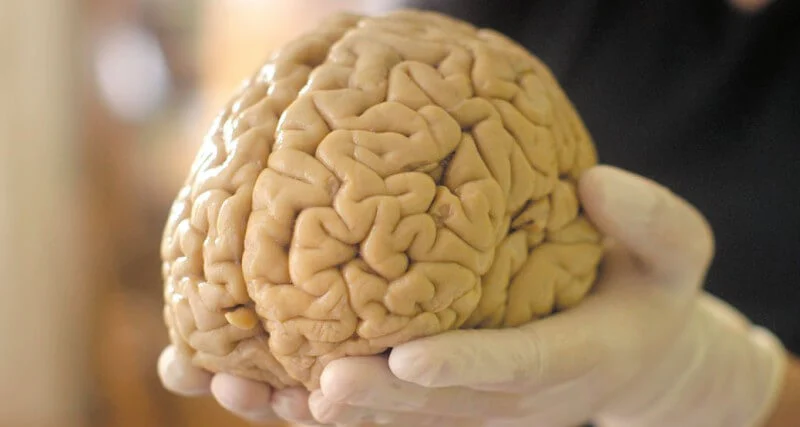
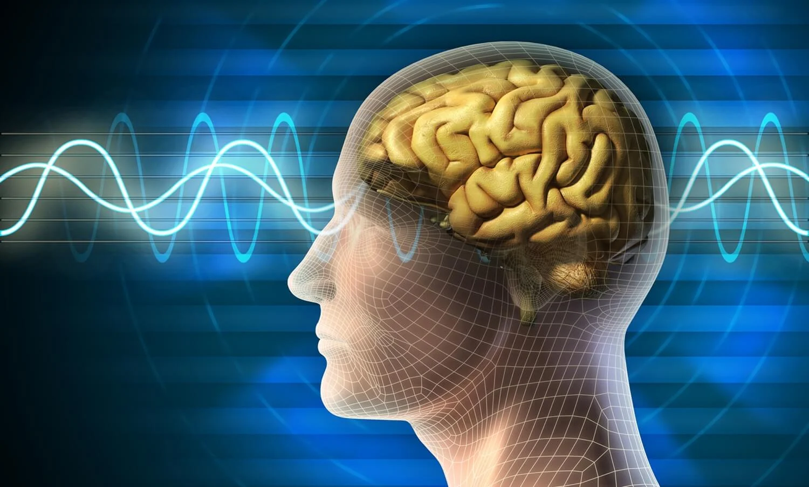

Эксцентричный в хорошем смысле этого слова предприниматель, плейбой, филантроп Илон Маск известен всему миру. Это он решил вывести человечество в космос, колонизировать Марс, отказаться от одноразовых ракет. Это он решил сделать мир чище, пересадив нас с автомобилей с ДВС на самоуправляемые автомобили. Пока разворачиваются эти предприятия, он не сидит сложа руки. Он задумал Neuralink, который поможет нам стать новыми людьми. Без границ и без слабостей, как и положено в новом мире Илона Маска.
Документировать сумасшедшие идеи Маска, как и всегда, вызвался Тим Урбан с WaitButWhy (он писал про искусственный интеллект , колонизацию Марса и SpaceX). Представляем одно из лучших произведений современной научно-популярной журналистики. Далее от первого лица.
Содержание
Часть первая: Колосс Человеческий
В прошлом месяце у меня был телефонный разговор.
Ладно, может быть, все было не так и слова были не совсем такими. Но после того, как я узнал, что за новую компанию решил создать Илон Маск, я начал понимать, что задуманное им можно назвать и так.Когда я писал о Tesla и SpaceX, я выяснил, что полностью понять деятельность некоторых компаний можно лишь приближая и отдаляя, изнутри и снаружи. Изнутри — технические проблемы, с которыми сталкиваются инженеры, снаружи — экзистенциальные проблемы, с которыми сталкивается наш вид. Изнутри — чтобы увидеть мир, каким он есть сейчас, снаружи — чтобы увидеть большую историю того, как мы дошли до этого момента и каким может быть далекое будущее.
Новое предприятие Илона — Neuralink — не только то же самое, спустя шесть недель после первого знакомства с компанией я убежден, что ей каким-то образом удается затмить Tesla и SpaceX как в смелости инженерных начинаний, так и в величии ее миссии. Две другие компании стремятся переопределить, что будут делать люди будущего. Neuralink стремится переопределить, кем будут люди будущего.
Головокружительный размах миссии Neuralink в сочетании с лабиринтом невероятной сложности человеческого мозга очень трудно осмыслить. Но когда я осмыслил это, когда провел достаточно времени, приближая и отдаляя картинку, я понял, что это самое крутое, что я видел. Мне кажется, я взял машину времени, отправился в будущее и вернулся, чтобы сказать вам: ребята, все это еще страннее, чем мы думали.Но прежде, чем я возьму вас в свою машину времени, чтобы показать, что нашел, нам нужно сесть в увеличительную машину. Потому что, насколько я понял, план на «шапочку из фольги», или шляпу волшебника, Илона Маска сложно понять сходу.
Поэтому приготовьтесь забыть все, что ваш мозг знает о себе и своем будущем, падайте на диванчик и погнали в червоточину.
600 миллионов лет назад никто ничего не делал вообще.
Часть вторая: мозг
Теперь давайте зайдем издалека. В биологии есть такой момент — она иногда заставляет задуматься, и мозг тоже порой заставляет по самое не хочу. Первое — это ситуация с матрешкой в вашей голове.
Часть третья: полет над гнездом нейронов
Есть много разных вариантов возможных нейрокомпьютерных интерфейсов (которые иногда называют интерфейсом «мозг — компьютер» или «мозг — машина»), которые пригодятся для разных вещей. Но все, кто работает над НКИ, пытаются решить один, второй или оба этих вопроса:
Как я буду извлекать нужную информацию из мозга?- Как я буду извлекать нужную информацию из мозга?
- Как я буду посылать нужную информацию в мозг?
Первое касается вывода мозга — то есть записи того, что говорят нейроны. Второе касается внедрения информации в естественный поток мозга или изменение этого естественного потока каким-то образом — то есть стимулирование нейронов.
Два этих процесса постоянно протекают в вашей голове. Прямо сейчас ваши глаза выполняют определенный набор горизонтальных движений, которые позволяют вам прочитать это предложение. Это нейроны мозга выводят информацию в машину (ваши глаза), а машина получает команду и реагирует. И когда ваши глаза движутся определенным образом, фотоны с экрана проникают в вашу сетчатку и стимулируют нейроны в затылочной доли вашей коры, позволяя картинке мира попасть вам в сознание. Затем эта картинка стимулирует нейроны в другой части вашего мозга, которая позволяет вам обрабатывать информацию, заключенную в картинке, и извлекать смысл из предложения.
